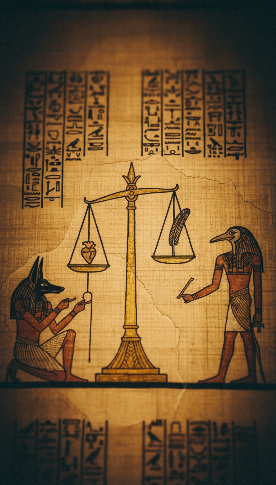

Egypt built the courtroom where your soul gets judged 1,300 years before Christianity claimed the patent.
The mechanism was already written down, illustrated, and deposited in a royal scribe's burial scroll. The British Museum has had it since 1888. The comparison has been documented in academic literature for two centuries. The receipts are public. What follows is the procedure.

The Document That Predates the Bible by a Millennium
The Papyrus of Ani. British Museum, catalog number EA10470. Dated to 1250 BC, during the reign of Ramesses II. Produced for a royal scribe named Ani and his wife Tutu. Seventy-eight feet of illustrated papyrus. The most complete surviving illustrated copy of the Egyptian funerary texts grouped under the label Book of the Dead.
The scroll does not describe abstract belief. It describes a legal proceeding with a named location, named officials, a named consequence, and a named reward. The location is the Hall of Two Truths, also called the Hall of Double Ma'at. It sits in the Duat, the Egyptian underworld, at a specific point in the soul's journey that the texts map with the detail of a route guide.
The scribes who wrote this were not composing poetry. They were writing instructions. The papyrus was placed in the tomb because the deceased needed it to navigate the trial. Every official they would encounter is named in the text. Every sin they would be required to deny is listed. Every response they were required to deliver is provided in full. This is a legal preparation document.
The Scale and the Feather
Anubis, the jackal-headed god of death and embalming, is the bailiff. He removes the heart from the deceased's chest. The texts specify the organ. He places it on the left pan of a golden scale.
On the right pan: the Feather of Ma'at. Ma'at was the Egyptian principle of truth, order, and cosmic balance. Her feather was the lightest object in existence. Your heart had to match it exactly. Not lighter. Not heavier. Exactly balanced.
The theology here has no room for forgiveness. The scale does not accept apologies. If you carried the weight of a lie in your life, the heart carried it to the trial. Grief added weight. Cruelty added weight. The scale measured what you actually were, not what you claimed to be in your final moments.
Forty-Two Judges and the Record of Everything
Forty-two judges sat in the Hall of Two Truths. Each one bore the name of a specific sin. Each one required you to state, directly, that you had never committed that sin in your lifetime. Scholars call this the Negative Confession. The list runs from murder and theft to waste of temple offerings and slander against the pharaoh.
The Papyrus of Ani preserves the confession verbatim: "I have not robbed. I have not slain men and women. I have not stolen food. I have not committed adultery. I have not lain with men. I have not caused weeping." Forty-two statements. Forty-two judges. Each statement addressed to a specific judge by name.
Thoth, the ibis-headed god of writing, records, and knowledge, stood at the scale with a tablet. He recorded the outcome of the weighing. He did not interpret the result. He did not advocate for the deceased. He wrote what the scale showed, and the record was permanent.
Ammit and the Concept of Annihilation
If the heart outweighed the feather, Ammit ate it. She waited beside the scale at every trial. Part crocodile. Part lion. Part hippopotamus. The front third of her body was the jaws and skull of a Nile crocodile. The middle third was the mane and forequarters of a lion. The rear third was the bulk of a hippopotamus.
She was not a punishment. She was an ending. Egyptian afterlife theology had no equivalent of hell. No eternal fire. No suffering extended through time. If Ammit consumed your heart, you ceased to exist. Your soul was unmade. Your name was struck from every record. The texts call this the second death.
The Egyptians did not build a place to punish the wicked. They built a machine to erase them. Christianity inherited the courtroom and replaced the machine with a verdict no one is permitted to audit.
The Field of Reeds
If the heart balanced, you entered Aaru. The Field of Reeds. The Papyrus of Ani describes it with the specificity of a property deed. Every river you had known in life, restored. Every field you had worked and harvested. Every person you had loved, present. Not a generic paradise. Your actual life, returned to you and perfected.
The Field of Reeds is described with irrigation canals, wheat fields of extraordinary height, and the presence of the deceased's ancestors. It is not described as a gift from the gods. It is described as a return. The soul gets back what it was owed for living well.
The reward is earned through demonstrated character, measured by an instrument that cannot be bribed or argued with. This is not faith-based theology. This is a performance review with a binary outcome and no appeals process.
What Christianity Moved Offstage
The Book of Revelation, written in 95 AD, describes a great white throne, a book of records opened at judgment, the dead standing before the judge, a lake of fire for the condemned, and a new paradise for the righteous. The structure is the Papyrus of Ani. The mechanism is removed.
Clement of Alexandria, writing around 200 AD, documented that Egyptian priests carried 42 sacred books during religious processions. Forty-two. The same number as the judges in the Hall of Two Truths. Clement was not concealing the connection. He named it in a text that remains in print to this day.
James Henry Breasted, founder of the Oriental Institute at the University of Chicago, documented the transmission routes between Egyptian theology and early Hebrew moral codes in his 1912 work Development of Religion and Thought in Ancient Egypt. His conclusion was that the Negative Confession predated and shaped the ethical frameworks that Hebrew scribes later codified. Breasted's work is cited in university curricula and absent from Sunday school.
The discovery of Tutankhamun's tomb in 1922 generated global press coverage of Egyptian burial texts and afterlife theology. The conversation about what Egypt knew, and when, was public and loud for a decade. The parallel to Christian doctrine was not hidden in that period. It was debated in newspapers. Then it stopped being debated.
The Council of Nicaea, convened by Constantine in 325 AD, selected the texts that would form the Christian canon. The selection criteria are not published. What survived is a judgment with no visible mechanism. No scale. No named judges. No recorder. No devourer. Just a verdict from a god whose process is sealed behind the word faith.
Egypt showed every element of the system. The trial is in the Papyrus of Ani. The mechanism is the Negative Confession. The judges are named. The recorder is named. The devourer is illustrated in full color on a scroll that has sat in a glass case in London for 138 years. When the structure moved west, the names were stripped out, the scale was removed, and the recorder was replaced with an omniscient deity whose conclusions are not subject to review.
What gets removed from a legal system when the architect wants to be the only judge? Exactly what was removed. The independent judges. The objective instrument. The permanent record. The only element that survived the transfer was the consequence for the condemned. But even that changed. In Egypt, the punishment was erasure. In the revision, it became suffering. Eternal, conscious, extended. The devourer became a fire that keeps you alive to feel it forever.
Egypt designed annihilation. Someone decided that was not enough. Someone decided the wicked needed to stay conscious and aware through all of it. The question is who benefits from a hell where the condemned are kept feeling, and what that answer tells you about who rewrote the trial and why they needed the old version buried.
Before you go
7 books the Vatican doesn't want you reading. Free PDF — the texts they cut, with sources. Joined by 140+ Inner Circle members.
No spam. Unsubscribe anytime.
Go deeper
The Hidden Canon, Vol. I — Enoch. Jubilees. Thomas. Mary. Judas. 90 pages, 14 chapters, every receipt cited. The books your Bible quietly removed.
Read the Canon →Books that informed this investigation
As an Amazon Associate, Hidden Epoch earns from qualifying purchases. Cost to you: nothing.
Research safely
The VPN we use to research without being tracked. First 3 months free.
Get NordVPN →